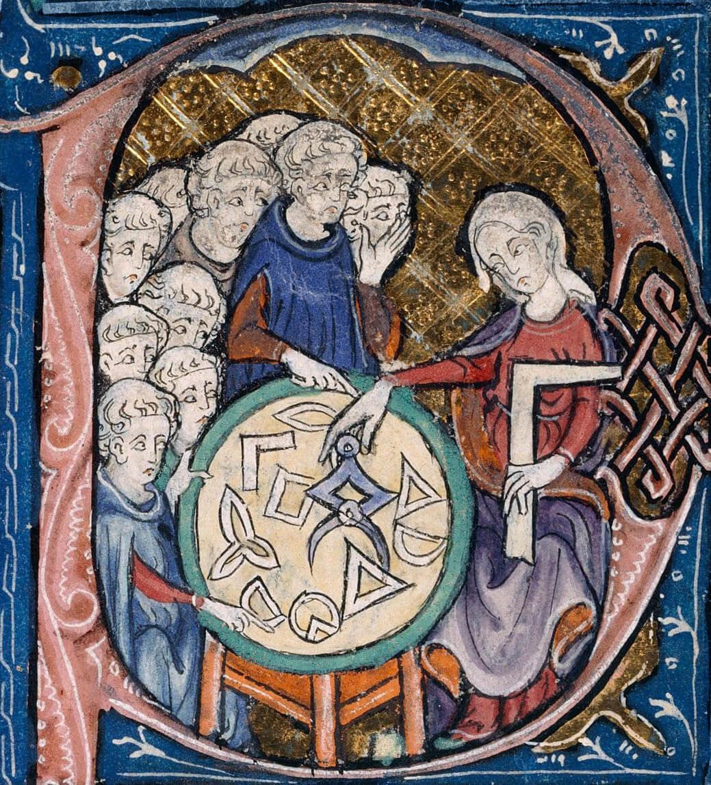

Mathematics A
CCVX entrance exam · Monday 14 December 2026 · Utrecht, 13:30–16:30
16 subdomains of notes
150 practice questions with solutions
2 full three-hour mock exams
12 past-exam walkthroughs

Free sample: A1 – Numbers and algebra
This complete subdomain is free, no account needed: its full notes and all its practice questions with worked solutions. It is exactly what the course looks like.
Loading the sample…
The syllabus map
Every domain and subdomain of the CCVX Mathematics A syllabus. The free sample subdomain is marked.
A · Domain A
- A1 – Numbers and algebra
- A2 – Linear relations
- A3 – Power and quadratic relations
- A4 – Exponential growth
- A5 – Logarithms
- A6 – Differentiation
- A7 – Applications of the derivative
- A8 – Sequences
- A9 – Sine functions
- A10 – Descriptive statistics
- A11 – Systematic counting
- A12 – Probability
- A13 – Random variables
- A14 – The binomial distribution
- A15 – The normal distribution
- A16 – Hypothesis testing

Official resources
- Past and sample exams: Mathematics A, every official free exam, with the tip to time yourself for 180 minutes
- CCVX: dates, registration and sample exams (www.ccvx.nl)
- The CCVX's own preparation advice